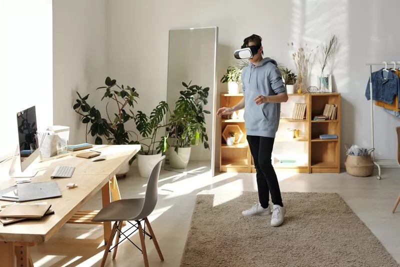
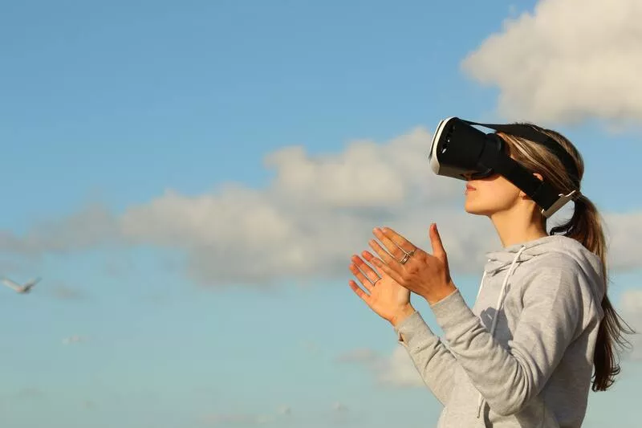

Виртуальной реальностью (VR) называют интерактивный мир, созданный с использованием современных компьютерных программ, который воспринимается человеком через основные органы чувств: зрение, слух, осязание и, порой, обоняние.
Технология виртуальной реальности заключается в создании среды, куда пользователь погружается, используя специальные сенсорные устройства. Существует много различных характеристик, описывающих виртуальный мир, но в совокупности они представлены крайне редко. Важными условиями для моделирования VR становятся:
Технология создания виртуальной реальности базируется на моделировании трехмерного пространства, в которое пользователь погружается полностью либо частично и с которым может взаимодействовать.
Существует три основных принципа действия данной разработки, обеспечивающие эффект присутствия человека в интерактивной среде:
Внедрение технологии виртуальной и дополненной реальности в различные сферы жизни происходит достаточно быстрыми темпами. Например:
Это отличная возможность познакомить клиентов со своей компанией, установить высокую степень доверия к бренду и выпускаемым продуктам. Формат может быть различный: вы можете показать процесс производства изнутри, рабочие будни сотрудников офиса, предоставить доступ пользователям к ассортименту товаров и т. д.
Большинство потребителей перед покупкой какого-либо товара желает его изучить поближе: посмотреть, потрогать, примерить и т.д. Применение технологии виртуальной и дополненной реальности в сфере продаж поможет вам дать им эту возможность.
Покупатель сможет изучить ассортимент продукции, получить консультацию продавца и даже визуальное представление о том, как будет смотреться выбранный товар на нем самом или в его квартире, если речь идет о покупке, например, предметов мебели. Создание такой интерактивной среды станет эффективным способом привлечения клиентов в сегментах В2В и В2С.
На сегодня это, пожалуй, самый эффективный способ демонстрации объектов клиентам. Надевая усовершенствованную модель очков виртуальной реальности, они не только видят высококачественное изображение, но и получают возможность взаимодействовать с интерактивными элементами.

Технологии виртуальной реальности в обучении предоставляют массу возможностей при разработке курсов различного уровня сложности, а также позволяют отслеживать сам процесс. К примеру, этот инструмент позволяет обучать сотрудников работе с клиентами, моделируя разные ситуации, наглядно демонстрировать работу какого-либо оборудования, налаживать бизнес-процессы компании.
В большинстве случаев использовать можно недорогие модели очков виртуальной реальности. Самое главное – разработать качественный эффективный курс.
Дополненная реальность не требует создания отдельной программы, вы можете добавлять 3D иллюстрации на страницы методических материалов и пособий.
В отличие от обычной игры на компьютере или смартфоне, где пользователь в основном является лишь наблюдателем, виртуальная реальность позволяет игроку окунуться в процесс полностью. Он оказывается активным участником происходящих событий, его контакт с элементами интерактивного мира становится более тесным, меняется общее восприятие.
Развитию различных отраслей промышленности также во многом способствуют устройства виртуальной реальности. С их помощью осуществляется моделирование, обучение сотрудников, детализация конструкции сложного оборудования, с которым им приходится работать.
В сфере развлечений и публичных мероприятий технологии виртуальной и дополненной реальности сегодня очень востребованы. Вовлечение пользователей в процесс осуществляется путем использования ими мобильных приложений, позволяющих посетить выставку или презентацию, поучаствовать в игре и прочее.

Для ученых, проводящих исследования на молекулярном и атомном уровнях, эта разработка – шикарная возможность изучения даже самых мелких частиц. В виртуальном мире обращаться с ними не сложнее, чем собирать конструктор.
Хирургия – достаточно ответственная и серьезная специальность, требующая тщательной и долгой подготовки. Поэтому технологии виртуальной реальности нередко применяются в медицине для обучения будущих врачей. Также этот инструмент доказывает свою эффективность при операциях, когда хирург с помощью специального оборудования получает абсолютный контроль над процессом, управляя движениями робота.
Специалисты в области компьютерных технологий считают, что в течение ближайших пяти лет технологии виртуальной и дополненной реальности будут набирать обороты популярности, становясь не менее актуальными и востребованными, чем сейчас смартфоны. На текущий момент зафиксирован показатель продаж шлемов 14 000 000, в 2023 году прогнозирует рост продаж до 70 000 000.
Совершенствование программного обеспечения в устройствах достигнет такого уровня развития, которое позволит улучшить качество изображения в 4000 × 4000 точек на оба глаза пользователя при 90 fps, что поможет расширить сферу применения технологии виртуальной реальности. Небезосновательно делается предположение, что наиболее востребованной она станет в игровой индустрии, потому как обеспечит максимальный уровень реалистичности происходящего.
Уже сегодня есть масса возможностей, чтобы, не выходя из дома, посещать выставки в художественных музеях, галереях, например, Курто или Музей Сальвадора Дали. Не кажется фантастическим присутствие в прямом эфире на концерте любимой группы или спортивном матче в качестве болельщика. Что уж говорить о фильмах и мюзиклах, знакомство с которыми в виртуальной реальности поможет зрителю ощутить себя частью захватывающего действа.
Расширение возможностей в медицине, промышленности, образовании будет происходить благодаря тому, что в скором времени все инструменты управления, такие как мыши, клавиатуры, джойстики, будут заменены на виртуальные. Это станет способствовать более продуктивному взаимодействию с элементами среды и пользователей между собой.
Внедрение технологии виртуальной реальности на сегодняшний день происходит малоинтенсивно из-за нехватки клиентской базы и отсутствия необходимых инструментов у производителей. Пользователям сложно доверять разработчикам, выпускающим программное обеспечение для виртуальной среды, потому как пока еще нет масштабных эффективных проектов, на которые можно было бы ориентироваться.
Решением данной проблемы занимаются крупные корпорации, в частности, Google, Sony, Microsoft, Facebook. Например, компания Google выпустила в продажу устройства виртуальной реальности Cardboard, перед этим выделив на тестирование миллион штук бесплатно. В своем большинстве технические эксперты полагают, что самым популярным станет оборудование для виртуальной реальности Oculus Rift.
Со стороны компаний Facebook и YouTube был произведен запуск поддержки онлайн-сервисов для виртуальной реальности.
Следствием хакерской атаки злоумышленников может стать утечка персональных данных пользователя как частного лица, так и большой компании. Это само по себе уже плохо, потому что злоумышленники могут использовать полученную информацию в преступных целях. Но гораздо худшими могут быть последствия взлома в виртуальной реальности.
Дело в том, что в этом случае в руки киберпреступников попадают не только имена и пароли пользователей, но и их биометрические данные. Таким образом мошенник сможет присвоить себе личность реального человека.
Существует потенциальная опасность, что хакер, видоизменив код приложения, станет менять виртуальную реальность по своему усмотрению. Вариантов множество. Например, он может использовать информацию о компании ей во вред путем добавления недостоверных данных или провоцирующих поправок. Тем самым он способствует утрате доверия пользователей и потере компанией своей репутации.
Противоправные действия киберпреступников могут быть направлены не только на компьютерные и мобильные устройства, но также и на гарнитуры, которые используются для виртуальной реальности. Как и в предыдущем случае, их цели могут быть самыми разнообразными.
Среди прочих опасностей виртуальной реальности можно назвать действия мошенников по завладению чужим имуществом. Допустим, вы принимаете участие в конкурсной разработке проекта жилого дома, результатом которого станет предоставление жилой площади победителю. Итак, вы выиграли, и организаторы исполнили свои обязательства. Вы с восторгом и предвкушением принимаете дом во владение. А тем временем хакеры, взломав сервер, меняют право собственности, оставляя вас ни с чем.
Ситуация плачевная, даже несмотря на то, что вы не понесли материальных убытков. Однако вы потеряли время, а компания – доверие пользователя.
В частности, можно столкнуться с ситуацией, в которой злоумышленник блокирует доступ пользователя к виртуальной среде и соглашает его восстановить за определенную плату.
К сожалению, успеха добиваются не только компании, занимающиеся разработкой технологии виртуальной реальности, призванной упростить и приукрасить жизнь пользователей, но и преступники, чьи достижения также не стоят на месте. Одним из направлений деятельности мошенников является негативное воздействие на психику человека, что в виртуальном мире может быть действительно страшным оружием.
Используя различные техники, например, 25 кадр, ультразвуковые или инфранизкие частоты, мерцание экрана, определенную цветовую гамму, гипноз и т. п., киберпреступники не просто взламывают VR-приложения, но и буквально человеческий мозг. Такое влияние отрицательно сказывается на психике пользователя.
В каких случаях может развиваться такой сюжет, похожий на блокбастер? Предположим, при противостоянии двух государств, осуществляющих психологическое воздействие на граждан, или с целью получения доступа к конфиденциальной информации крупной компании.
Цифровые технологии виртуальной и дополненной реальности открывают перед человечеством массу новых уникальных возможностей. Это большой шаг в будущее, стремительное развитие которого уже не за горами. Благодаря такому инструменту мы сможем значительно улучшить качество нашей жизни, сделать множество полезных научных открытий, добиться высоких показателей в промышленности, главное – знать о возможных рисках.
Second Life — сетевой трёхмерный виртуальный мир с элементами социальной сети, который насчитывает свыше 1 млн активных пользователей. Самая популярная на сегодняшний день реализация виртуальной реальности.
Active Worlds
На платформе AltspaceVR[en] реализована деятельность Церкви виртуальной реальности — протестантской пятидесятнической религиозной организации, проводящей богослужения в виртуальном пространстве.
Вы можете создавать мобильные приложения, не имея под рукой подходящего смартфона, но создать VR-приложение без соответствующего устройства практически невозможно. Поэтому вашим первым шагом будет покупка любого, пускай даже примитивного VR-адаптера.
Следующем шагом будет установка правильного «движка», коим в нашем случае будет являться Unity. На сегодняшний день он наилучшим образом настроен не только для создания VR-приложений с нуля, но и на перевод в данный формат уже существующих 3D творений. Кстати, блуждая по просторам интернета вы можете наткнуться на мнение, что опция VR у Unity изначально была разработана для взаимодействия с пакетом Google Cardboard SDK, поэтому использование под iOS доставит немало трудностей. Первая часть частично правдива, а вот вторая — нет. Во всяком случае реальных проблем замечено не было.
Третий и главный шаг — среда разработки приложения, это стандартные и всем известные IDE, принципиальной разницы в данном вопросе нет.
Если мы говорим о создании мобильных приложений, то именно такой набор инструментов считается оптимальным, но в зависимости от рода вашего творения можно использовать и другие.
Начиная с 4 версии вам также откроется доступ к возможностям работы с VR-графикой. Однако в силу некоторой сложности и дороговизны платформы, назвать Unreal приоритетным вариантом язык не повернётся.
Веб-сервис, позволяющий в несколько нажатий мышкой создать собственное VR-приложение. Прекрасно подойдёт для реализации простых задумок, будь то визуализация пейзажа или виртуальная 3D консоль.
Специализированный сервис для создания VR-видео. Здесь действительно легко заниматься прототипированием, склейкой видео, наложением эффектов, но и цена начинается от 499 €. Впрочем, есть 14-дневная триал-версия для оценки возможностей.
Приложение для обработки фотографий с возможностью преобразования в формат VR.
Аналогичный сервис, доступный только для iOS. Ещё находится в стадии разработки, но уже имеет неплохой функционал.
До эры компьютерных технологий под виртуальностью понимали объект или состояние, которые реально не существуют, но могут возникнуть при определённых условиях.
Понятие искусственной реальности было впервые введено Майроном Крюгером (англ. Myron Krueger) в конце 1960-х. В 1964 году Станислав Лем в своей книге «Сумма Технологии» под термином «Фантомология» описывает задачи и суть ответа на вопрос «как создать действительность, которая для разумных существ, живущих в ней, ничем не отличалась бы от нормальной действительности, но подчинялась бы другим законам?». Первая система виртуальной реальности появилась в 1962 году, когда Мортон Хейлиг (англ. Morton Heilig) представил первый прототип мультисенсорного симулятора, который он называл «Сенсорама» (Sensorama). Сенсорама погружала зрителя в виртуальную реальность при помощи коротких фильмов, которые сопровождались запахами, ветром (при помощи фена) и шумом мегаполиса с аудиозаписи. В 1967 году Айвен Сазерленд (англ. Ivan Sutherland) описал и сконструировал первый шлем, изображение на который генерировалось при помощи компьютера. Шлем Сазерленда позволял изменять изображения соответственно движениям головы (зрительная обратная связь).
В 1970-х годах компьютерная графика полностью заменила видеосъёмку, до того использовавшуюся в симуляторах. Графика была крайне примитивной, однако важным было то, что тренажёры (это были симуляторы полётов) работали в режиме реального времени. Первой реализацией виртуальной реальности считается «Кинокарта Аспена», созданная в Массачусетском Технологическом Институте в 1977 году. Эта компьютерная программа симулировала прогулку по городу Аспен, штат Колорадо, давая возможность выбрать между разными способами отображения местности. Летний и зимний варианты были основаны на реальных фотографиях.
В середине 1980-х появились системы, в которых пользователь мог манипулировать с трёхмерными объектами на экране благодаря их отклику на движения руки. В 1989 году Джарон Ланьер ввёл более популярный ныне термин «виртуальная реальность». В фантастической литературе поджанра киберпанк виртуальная реальность есть способ общения человека с «киберпространством» — некой средой взаимодействия людей и машин, создаваемой в компьютерных сетях.
В данный момент технологии виртуальной реальности широко применяются в различных областях человеческой деятельности: проектировании и дизайне, добыче полезных ископаемых, военных технологиях, строительстве, тренажёрах и симуляторах, маркетинге и рекламе, индустрии развлечений и т. д. Объём рынка технологий виртуальной реальности оценивался в 15 млрд долларов в год.